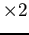
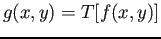
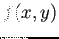
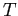
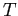
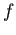
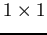
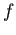
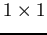

Siguiente: Umbral Subir: Fundamentos teóricos Anterior: Erosión Índice General
Los métodos en el dominio espacial son procedimientos que operan directamente sobre los pÃxeles de la imagen y pueden denotase con la expresión
, donde  es la imagen de entrada,  es la imagen resultado de la operación y  es un operador sobre  definido sobre alguna vecindad alrededor de
es un operador sobre  definido sobre alguna vecindad alrededor de  ().
().
El enfoque principal en la definición de la vecindad alrededor de un punto  , es el uso de una zona de sub imagen cuadrada o rectangular centrada en
, es el uso de una zona de sub imagen cuadrada o rectangular centrada en  . Cuando esta vecindad se establece a un valor de
 (un pÃxel),  depende únicamente del valor de en
. Cuando esta vecindad se establece a un valor de
 (un pÃxel),  depende únicamente del valor de en  y
y  se convierte en una función de transformación de intensidad de la forma . Dado que en este proyecto se trabaja con imágenes en escala de grises,
se convierte en una función de transformación de intensidad de la forma . Dado que en este proyecto se trabaja con imágenes en escala de grises,  y
y  son variables que denotan el nivel de gris de y en el punto
son variables que denotan el nivel de gris de y en el punto  respectivamente.
respectivamente.